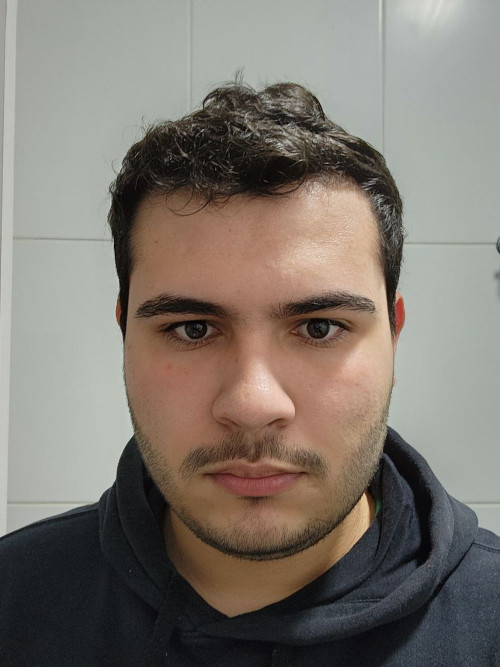

Perfil
Nome:
Heric Virgilio Viana Santos
Local de nascimento:
Vitoria da Conquista
Quem são seus pais?
Mãe Ires Fernandes pai Massio Virgilio
Historia
Fiz meu ensino medio no Sesi passei no IFBA para sistemas porem por problemas com a gestão me transferi para a Unex(seria melhor Unix) e estou fazendo o trabalho de tecnicas de programação web
Endereço
Moro no bairro Candeias
Como é seu bairro?
É um bom bairro tem supermercado, padaria e areas de lazer proximas
Questoes de segurança
Tem assaltos como qualquer outro bairro principalmente em dias de festa
Quais foram as disciplinas do ultimos semestre
Arquitetura de computadores, banco de dados, estrutura de dados, probabilidade e estatistica e metodologia cientifica
Aproveitamento
Tive um otimo aproveitamento com nota media de 7.9
Disciplinas que estou cursando atualmente
Tecnicas de programação web, banco de dados 2, TID 1, complexidade de algoritimos, Interface homem maquina
Espectativas
Alto aproveitamento e fazer mais amigos e contatos.